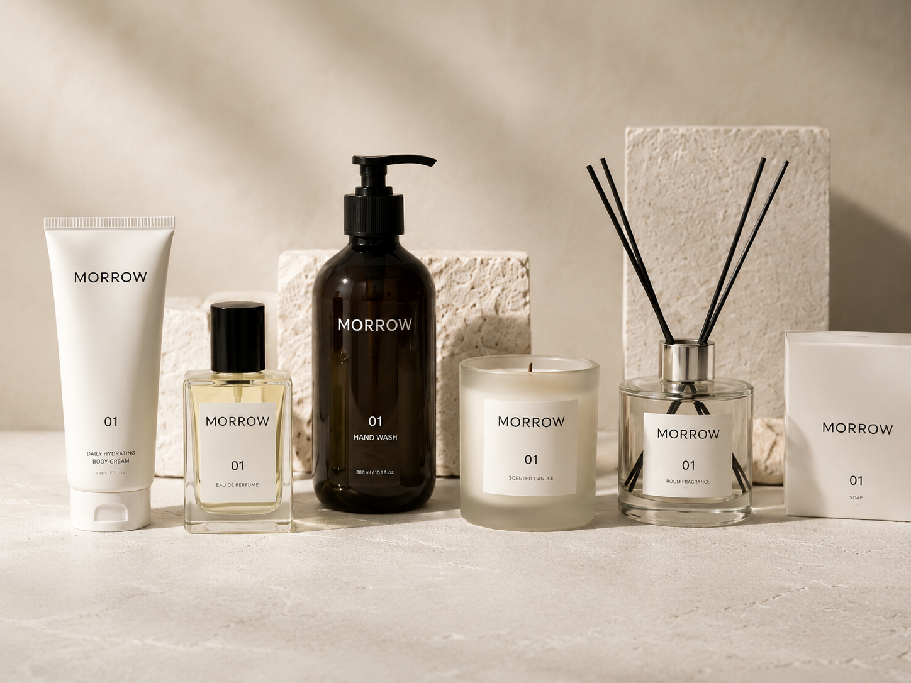
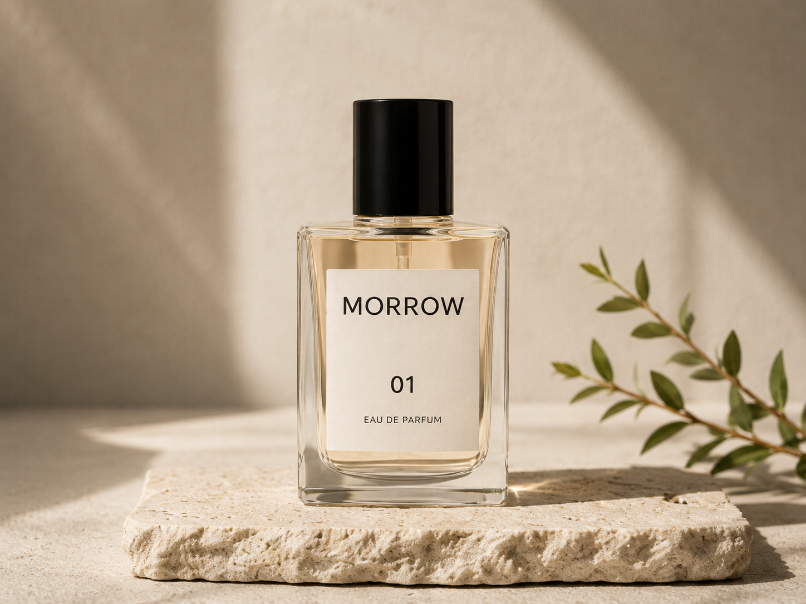

CASE / MORROW · Vendier Lab Sample
Vendier Lab이 먼저 본 건 광고가 아니라, 지금 무엇부터 고쳐야 하는지였습니다.

*본이미지는 샘플이미지입니다.
case/situation
자사몰도 있고, 스마트스토어도 있고, 광고도 SNS도 돌아가고 있었습니다.
*본이미지는 샘플이미지입니다.
그런데, 왜 매출이 떨어지는지는 몰랐습니다.
case/questions
광고를 더 해야 할까요?
상품을 바꿔야 할까요?
판매처를 더 늘려야 할까요?
아니면, 지금 하고 있는 것부터 다시 봐야 할까요?
WE LOOKED CLOSER.
상품부터 판매 환경, 고객 반응까지 함께 살펴봤습니다.
그리고 가장 먼저 손댈 곳을 하나 정했습니다.
case/decision
문제는
광고가 아니었습니다.
먼저,
판매의 중심부터 다시 잡았습니다.
상품이 많고 채널도 많았지만, 고객에게 가장 먼저 보여줘야 할 상품이 선명하지 않았습니다.
처음 보는 고객도 브랜드를 바로 이해하고, 다른 상품까지 자연스럽게 이어질 수 있는 제품을 먼저 세웠습니다.

*본이미지는 샘플이미지입니다.
case/after
BEFORE
무엇을 먼저 팔아야 하는지는 흐렸습니다.
↓
AFTER
나머지는 그 뒤에 질서 있게 연결됩니다.
case/changed
무엇을 먼저 보여줄지 정하고, 고객이 그 이유를 쉽게 이해하게 만들었습니다.
더 하는 것보다, 지금 필요한 것에 집중했습니다.
case/perception
BEFORE
"광고비를 더 써야 하나?"
"신상품을 더 만들어야 하나?"
"왜 팔리는데 돈이 안 남지?"
AFTER
"지금 무엇부터 해야 하는지 알겠다."
"어디에 돈을 써야 하는지 보인다."
"무엇을 먼저 팔아야 할지 정리됐다."
case/impact
팔리고, 남고,
다시 사는지를 봅니다.